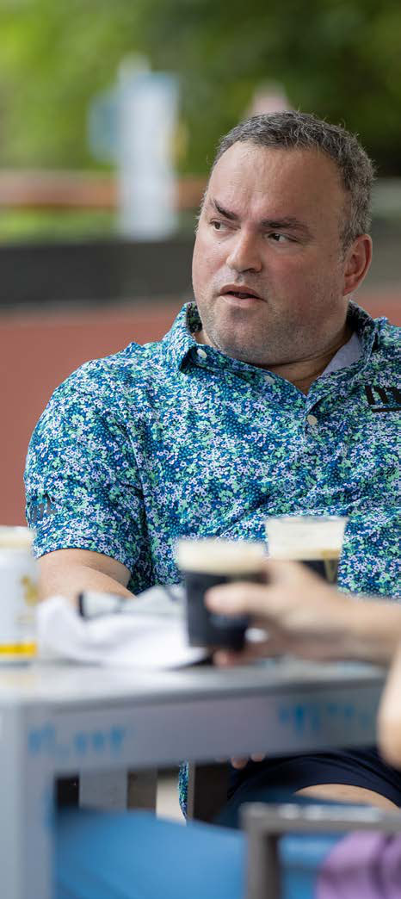

Nuno Rio Tinto did not come to Mint to keep the lights on. He came to switch on a market. Bangkok was not a lightning bolt. “There wasn’t a single moment, more like a slow hum that got louder,” he says. He wanted warmth, a little chaos, creative energy.
Central Embassy in Phloen Chit became his unofficial base: breakfasts, lunches, coffees, conversations that started casual and ended with next steps.
Nuno arrived with more than a decade across business development, strategy and operations, including leading Swift Property Maintenance in the UK.
That mix now focuses on Thailand. Spot the right opportunities. Shape clear scopes. Keep programmes realistic. Build teams that actually do what they say.
The first proof point came quickly with the YETI APAC workplace. Tight brief, tighter timeline. Fourteen weeks from start to handover.

Early alignment on site, clear lead times from suppliers, and M&E decisions shaped by how things are really built, not just how they look on a drawing.
The result was a clean handover and a project that says to future clients, “This is what you can expect.”